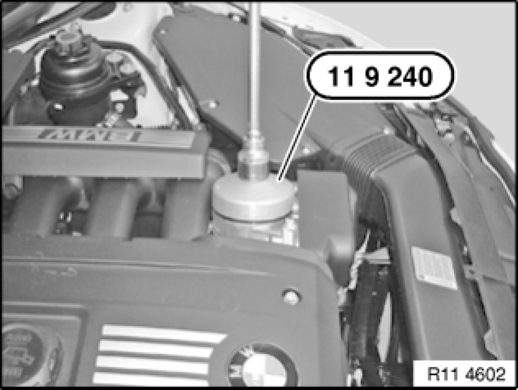
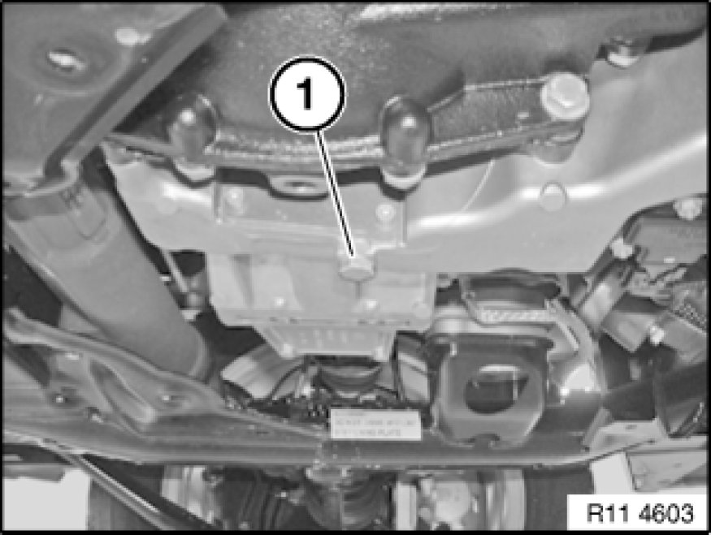

BMW Engine Oil Service Incl. Supplementary Service (N52K)
00 00 250 - BMW engine oil service incl. supplementary service (N52K)

Special tools required:
- 11 9 240 11 9 240 Oil Filter Wrench
The FRU item 00 00 250 comprises the BMW engine oil service incl. supplementary service.
Only the engine oil service will be described in these repair instructions.

The supplementary service is made up of the following operations which must be taken from the relevant repair instructions:
- Reset service interval indicator With Tester according to factory specification
- Replace microfilter for interior ventilation
- Check brake lining thickness Testing and Inspection
- Adjust handbrake/parking brake Adjustments
- Parking brake function check

Important!
Adhere to exact filling quantities.
Overfilling the engine with engine oil will result in engine damage.
Checking and drip-off times must be observed.
Important!
When working on the engine oil, coolant or fuel circuit, you must always protect the alternator against contamination.
Risk of damage!
The alternator must therefore be covered with suitable apparatus.

Recycling:
Catch and dispose of drained engine oil in a suitable container.
Observe country-specific waste-disposal regulations.

Note:
Adhere to the following work steps in sequence:
1. Open oil filter cap.
2. Release screw plug in oil sump.

Note:
Picture shows the E93 by way of example. Other model series may differ in certain details.
Release oil filter cap with special tool 11 9 240 11 9 240 Oil Filter Wrench.
Engine oil flows out of the oil filter housing and back into the oil sump.

Remove and insert oil filter element (1) in direction of arrow.
Installation Note:
Replace oil filter element (1) and sealing rings (2).
Installation Note:
Moisten sealing rings (2) with engine oil.
Tightening torque 11 42 1AZ 11 42 Oil Filter Element with Connections.

Note:
For purposes of clarity, the picture shows the assembly underside protection and reinforcement plate removed.
Unclip service opening on reinforcement plate.
Open screw plug (1) in oil sump.
Drain engine oil.
Installation Note:
Replace sealing ring.
Tightening torque 11 13 1AZ [1][2]11 13 Oil Pan.
Pour in engine oil.
Note:
Start engine and run at idle until oil pressure warning lamp goes out.
Turn off engine.
Check oil filter cap and screw plug (1) on oil sump for leaks.
Assemble engine.
Checking engine oil level:
- Park vehicle on a horizontal surface
- Allow engine at normal operating temperature to run for three minutes with increased revs (approx. 1100 rpm)
- Read off engine oil level in instrument cluster or on Control Display
- Top up engine oil if necessary